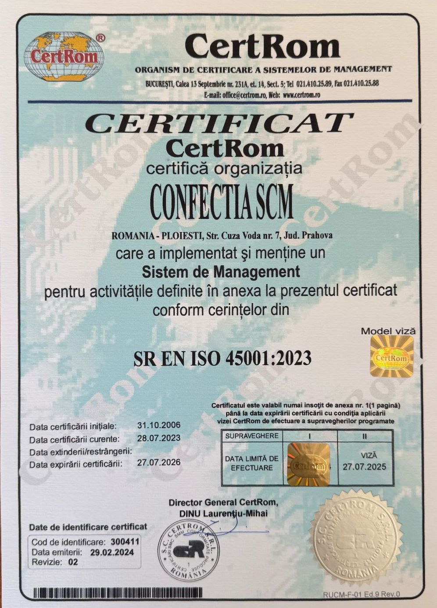
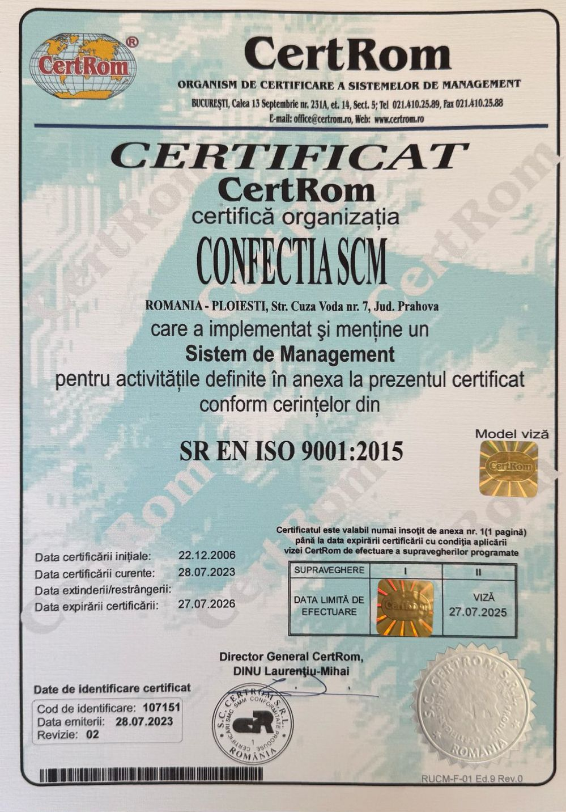
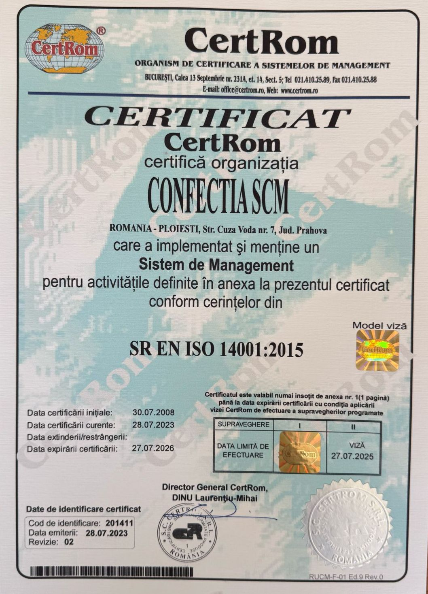

Certificări

Certificare ISO 9001 pentru managementul calității în producția de confecții.

Certificat de conformitate pentru materiale textile folosite în procesul de fabricație.

Autorizare profesională pentru lucrări personalizate la comandă cu standarde europene.